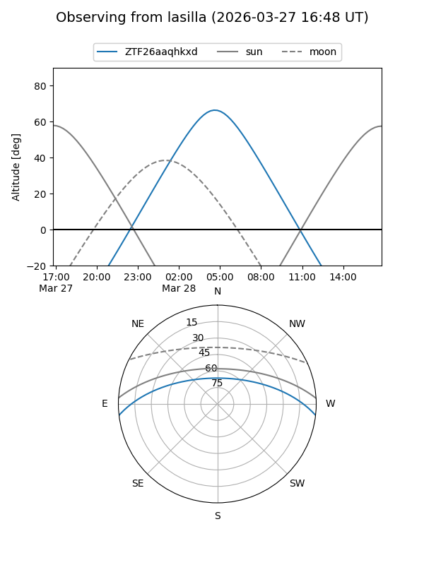
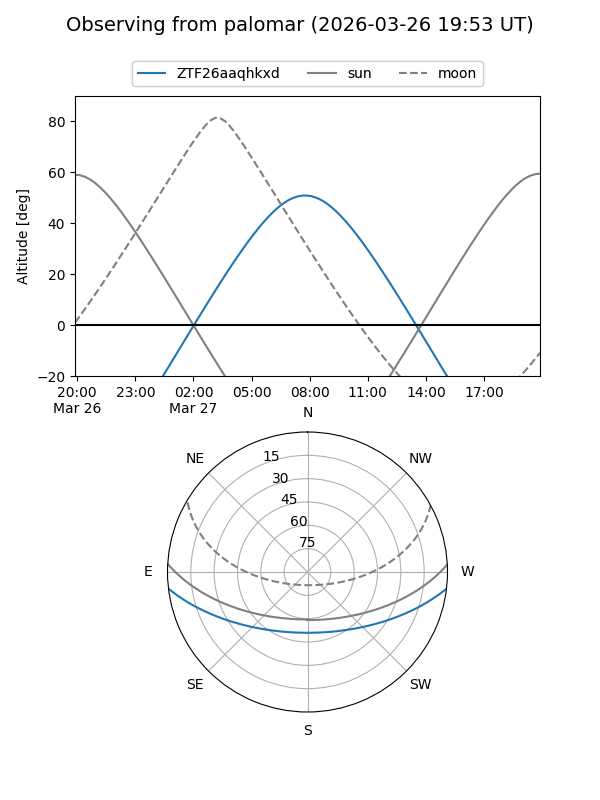

ZTF26aaqhkxd
Target ZTF26aaqhkxd at 2026-03-27 09:48
Aliases and brokers:
FINK: link
Lasair: link
ALeRCE: link
alt names
ZTF26aaqhkxd (ztf,fink_ztf)
Coordinates:
equatorial (ra, dec) = 183.8986,-5.57196
equatorial (HMS+DMS) = 12:15:35.67,-05:34:19.05
galactic (l, b) = (286.7638,+56.17049)
Flags:
Photometry:
last ztfg=17.56
1 ztfg detections
Lightcurve
Visibility


Additional plots